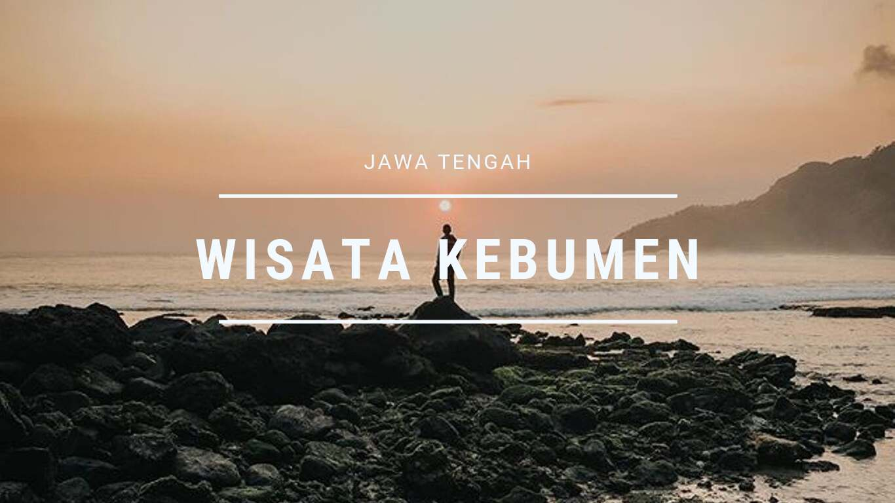

Selamat datang di Website Saya.... , Ini adalah Proyek UAS Teknologi CLoud. Saya merupakan mahasiswi di salah satu perguruan tinggi swasta di Yogyakarta yaitu STMIK AKAKOM YOGYAKARTA. Saya adalah mahasiswi angkatan 2018 . Baca lebih lengkap tentang kampus kami di link dibawah ini:
http://akakom.ac.id Follow Us:

Profil Kota Kebumen
Kebumen merupakan sebuah Kabupaten di Jawa Tengah, Kabupaten ini memiliki sejuta pesona dan panaroma alam yang menakjubkan dan masih banyak yang tersembunyi, sehingga masih banyak orang yang belum mengetahui akan keindahan dan tempat keren yang ada di Kebumen tersebut. Kebumen punya banyak Spot objek wisata keren, mulai dari Situs budaya, situs bersejarah, spot foto foto kekinian, Pantai – Pantai yang indah, sampai air terjun yang sangat memanjakan mata dan harus segera kalian jelajahi.
Jika Anda punya rencana untuk berlibur ke Kebumen, Jangan khawatir akan keindahannya, Kabupaten ini menawarkan cukup banyak wisata pilihan untuk Anda dikunjungi. Selama ini jika Kebumen jarang terdengar tempat yang keren untuk berlibur, namun ternyata Kebumen ini juga memiliki banyak tempat-tempat wisata alam yang keren yang tak kalah dengan wisata di Semarang, Jogja ataupun kota besar lainnya.
Baiklah agar tidak panjang lebar, langsung saja ke titik tujuan artikel ini kami buat, Artikel ini bertujuan Untuk memudahkan Anda menemukan tempat wisata di Kebumen yang paling indah, Terbaru dan di rekomendasikan untuk Anda Jelajahi.